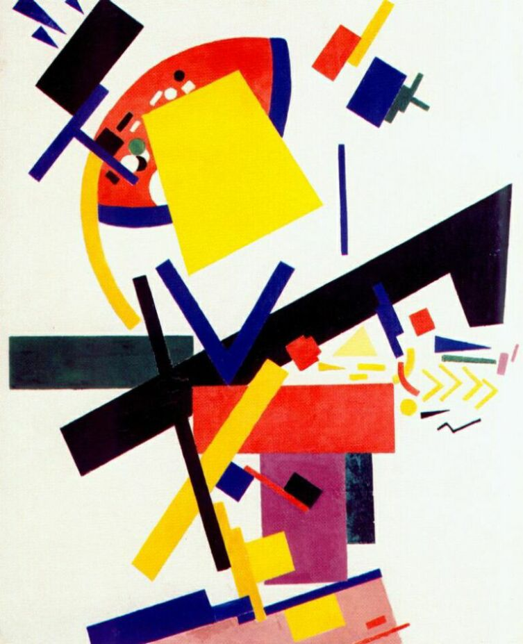
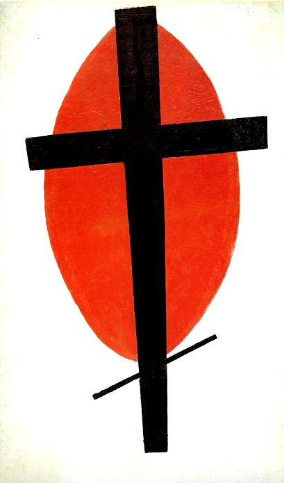

Супрематизм - это комбинации цветных плоскостей и геометрических очертаний.
Сочетание разноцветных и разновеликих геометрических фигур образует пронизанные внутренним движением уравновешенные асимметричные супрематические композиции.

Центр русского авангарда
На начальном этапе этот термин означал доминирование и превосходство цвета над всеми остальными свойствами живописи.
В беспредметных полотнах краска была впервые освобождена от подсобной роли, от служения другим целям, супрематические картины стали первым шагом «чистого творчества». Это течение уравнивало творческую силу человека и Природы.

В дальнейшем, даже в условиях гонений на авангардное искусство в СССР, идеи cупрематизма нашли своё воплощение в архитектуре, дизайне и сценографии.